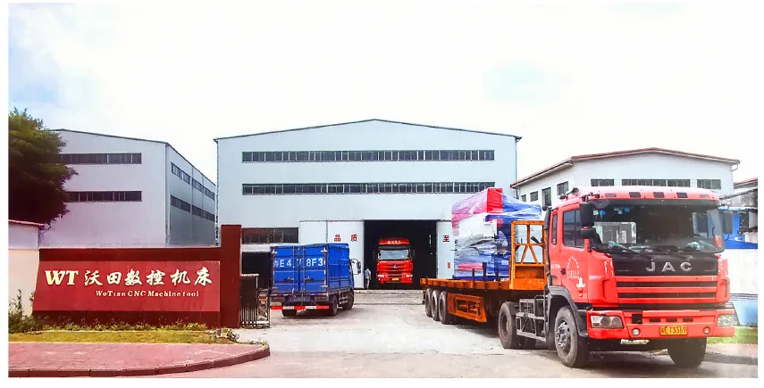
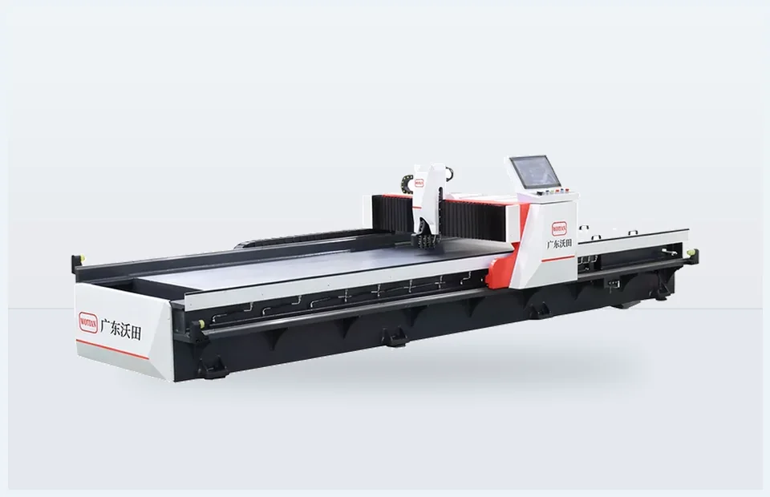
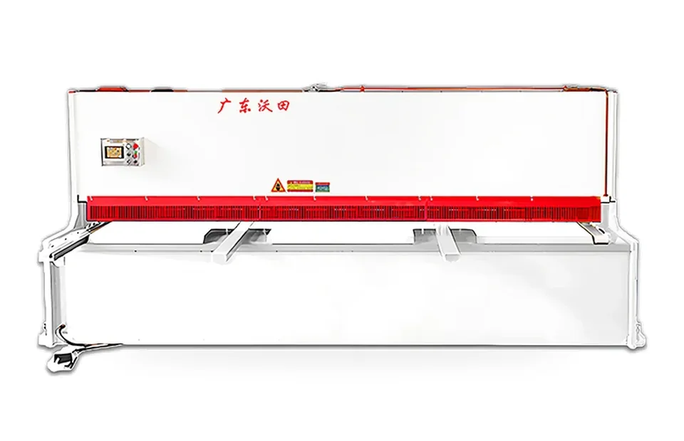
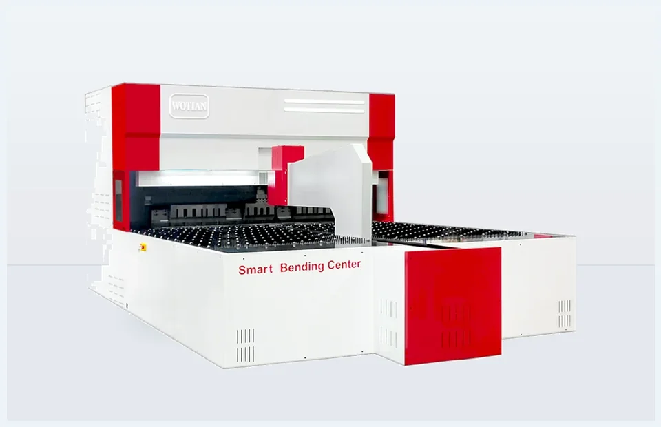

Match the machine capacity with your material thickness, bending length and target workpiece.
Foshan machinery factory
Foshan Sheet Metal Machinery Factory Since 2004
WOTIAN manufactures press brakes, V grooving machines, hydraulic shears, panel benders and laser cutting machines for overseas sheet metal workshops, distributors and project buyers.

Company overview
A practical machine builder for sheet metal production
WOTIAN CNC Machine Tool Manufacturing Co., Ltd. is based in Foshan, Guangdong, one of China's active manufacturing centers for metalworking equipment and industrial supply chains. Since 2004, the factory has focused on CNC sheet metal machinery used for bending, grooving, cutting, shearing and panel forming.
For overseas buyers, WOTIAN's work is not only to provide a machine model number. The team helps confirm material thickness, bending length, accuracy needs, daily output, local voltage, controller language, tooling and packing requirements before quotation, so the recommended machine is closer to the buyer's real production job.

0+Years CNC machinery experience
0m²Modern plant in Foshan
0+Employees for production and support
0R&D specialists
ExportEurope, North America, Asia and other markets
What we manufacture
Press brake solutions first
Factory products for sheet metal workshops
 CNC / NC Press Brake MachinesCNC, NC hydraulic, electric servo and tandem press brake solutions.
CNC / NC Press Brake MachinesCNC, NC hydraulic, electric servo and tandem press brake solutions.

V Grooving MachinesVertical and horizontal grooving for sharp bends and decoration panels.
Hydraulic Shearing MachinesSheet cutting before bending, welding and forming.
Panel Bending CentersAutomated forming for cabinets, panels and batch sheet metal parts. Fiber Laser Cutting MachinesFlexible cutting for profiles, holes and fabrication parts.
Fiber Laser Cutting MachinesFlexible cutting for profiles, holes and fabrication parts.
Press brake manufacturing focus
Press brake machines are a core WOTIAN product line
Many overseas buyers contact WOTIAN first for bending equipment. The factory supports CNC press brakes for higher repeatability, NC hydraulic press brakes for economical general bending, electric servo press brakes for compact precision work, and tandem press brakes for long workpieces and large panels.
During model selection, WOTIAN checks material type, maximum thickness, bending length, tooling needs, accuracy requirement, daily output and budget. This helps buyers choose between standard models and customized configurations before production starts.
Customization capability
01Tonnage & Bending Length
02CNC / NC Controller Options
03Tooling & Crowning Configuration
04Table Size & Throat Depth
05Voltage & Controller Language
06Color, Nameplate & OEM Branding
07Export Packing & Machine Protection
Send Your Workpiece Details
Customized Around Your Real Bending Requirements
Every press brake order should match the buyer's actual workpiece, material thickness, bending length, accuracy requirement and local installation conditions. Before production, WOTIAN helps confirm the key configuration details to reduce selection mistakes and export delivery risks.
Choose suitable controller options based on accuracy requirement, budget and operator habits.
Configure bending tools and crowning system for stable bending angles and repeat accuracy.
Confirm working space for larger panels, deeper bends and special workpiece shapes.
Support local voltage, controller language and export market requirements.
Customize machine color, logo, nameplate and branding for distributors or project buyers.
Prepare anti-rust protection, film wrapping, wooden packaging and container loading support.
From technical confirmation to export packing
- Technical confirmationReview material, thickness, drawings, voltage and destination country.
- Model selectionMatch press brake or sheet metal machine configuration to the job.
- Manufacturing and assemblyBuild the machine according to confirmed model and options.
- Controller and tooling setupPrepare controller, tooling and required language settings.
- Machine testingCheck core operation before packing and shipment preparation.
- Export packingProtect machine body, key components and accessories for transport.
- Shipment preparationCoordinate documents, packing details and shipping communication.

Export support
Prepared for overseas delivery and installation planning
WOTIAN's export support covers practical details that matter after the order is placed: machine protection, packing communication, voltage confirmation, controller language, documents, shipment coordination and preparation information for installation.
- Packaging suitable for international transport.
- Voltage and controller language confirmed before production.
- Communication around documentation and shipment schedule.
- Machine protection and accessory packing for overseas buyers.
Certification and documents
Document references for buyer review
WOTIAN catalog materials reference TUV Rheinland, ISO9001 and CE certification. Certificate copies and machine documents can be discussed during quotation or order confirmation.
CE reference
ISO9001 reference
TUV Rheinland reference
Machine documents
Practical model selection
Buyers can send material thickness, bending length and target product to receive a more suitable configuration.
Factory-direct quotation
The quotation can include machine model, options, tooling, voltage, packing and export details.
Customization support
Special sizes, controller options, OEM requests and packing details can be confirmed before production.
Export communication
WOTIAN supports overseas buyers with responsive communication before production, packing and shipment.
Press brake quotation support
Send Your Material Thickness and Bending Length
Share material type, maximum thickness, bending length, target product, daily output, voltage and destination country. WOTIAN can recommend a practical press brake configuration.
FAQ
Can WOTIAN customize machine size or configuration?
Yes. The catalog states special model customization is available. Buyers can request tonnage, bending length, control system, tooling, voltage, color, and packaging options.
What information should I send for a quotation?
Send material type, thickness, sheet length, target products, daily output, required accuracy, destination country, and any preferred controller or tooling brand.
Can the machines be prepared for export shipment?
Yes. The site highlights export packaging, machine protection, documentation support, and shipment coordination for overseas buyers.
Which press brake should I choose?
Choose CNC press brakes for higher accuracy and repeatability, NC press brakes for economical general bending, electric servo models for clean compact precision work, and tandem machines for extra-long parts.
Can you customize voltage and controller language?
Yes. Voltage, controller language, safety configuration, tooling, and machine color can be discussed before production.
Do you support OEM branding?
Yes. OEM support is available for distributors and project buyers who need customized appearance, nameplates, or market-specific configuration.
What is the usual quotation response process?
Send the material, thickness, working length, product drawing or photo, destination country, and target quantity. WOTIAN can recommend a suitable model and quotation scope.
Do you provide installation support?
WOTIAN can support overseas buyers with operation guidance, machine documentation, remote communication, and preparation details before shipment.